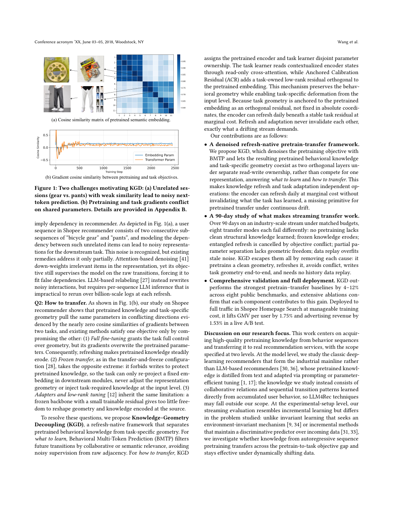

#1
★ 8/10
Knowledge-Geometry Decoupling: Refreshable Pretrained Transfer for Streaming Recommendation
知识-几何解耦：面向流式推荐的可刷新预训练迁移

图 Figure · Page 2 of paper
🎯 将预训练知识与任务学习解耦，实现流式推荐的持续刷新。
Decouples pretrained behavioral knowledge from task-specific learning to enable continual refresh in streaming recommendation.
🗣️ 一句话比喻 · Plain-English Analogy就像一位大厨有一本"通用菜谱大全"（预训练编码器），每个月都会用新食材更新；同时还有一个"餐厅专属小本子"（任务学习器），记录针对每家餐厅口味的独家调整。聪明的是：小本子用特殊墨水写成，永远不会污染大菜谱——更新大菜谱时不会毁掉小本子的内容，两者完全独立，互不干扰。Think of it like a chef who keeps a master recipe book (the pretrained encoder) that gets updated with new seasonal ingredients every month, and a separate personal notebook (the task learner) where they write down tweaks for each restaurant's menu. The clever part: the personal notebook is written in a special ink that never smudges onto the master recipe book — so updating the master book never ruins the restaurant-specific notes, and vice versa.
| 维度 | 中文 | English |
|---|---|---|
| ❓ 待解决 的问题 |
电商推荐系统（比如购物App）需要不断学习用户的最新行为来猜你喜欢什么。但用户的喜好每天都在变化，模型必须持续更新。问题是：每次用新数据刷新预训练模型时，之前为具体任务做的调整就会被破坏——就像每次教科书出新版，你在页边写的笔记都被清空一样。此外，现有方法还会把毫不相关的浏览记录混在一起训练，让模型学到很多假关联。 | Online recommenders (like those on shopping apps) learn from your past behavior to predict what you'll like next. But user behavior constantly shifts over time, so the AI model must keep updating. The problem: when you refresh the pretrained model with new behavior data, it often "forgets" or clashes with the task-specific tuning already done — like erasing notes you wrote in the margins of a textbook every time a new edition comes out. Existing methods also train on noisy behavior sequences that mix up unrelated browsing sessions, teaching the model false connections between items. |
| 💡 解决 的亮点 |
• 提出行为多Token预测（BMTP），只保留真正相关的未来商品作为监督信号，过滤掉跨会话的噪声，让模型学到更干净的行为知识。 • 将预训练知识和任务专属几何结构分配到完全独立的参数集合，刷新编码器时不会破坏下游任务的调整结果。 • 设计"锚定校准残差"（ACR），让任务层的更新在数学上与预训练嵌入正交，从根本上消除干扰。 | 1. Introduces Behavioral Multi-Token Prediction (BMTP), which filters out noisy, unrelated item transitions so the model only learns from genuinely related future items — producing cleaner behavioral knowledge. 2. Decouples pretrained knowledge and task-specific geometry into completely separate parameter sets, so refreshing the encoder never accidentally wipes out downstream task tuning. 3. Uses an "Anchored Calibration Residual" (ACR) that writes task-specific adjustments in a direction mathematically guaranteed not to interfere with pretrained embeddings. |
| 🧪 实验 内容 |
研究者在8个公开推荐基准数据集上测试了KGD（包括Amazon多品类商品评论数据集等标准序列推荐数据集），与MoRec、UniSRec等强预训练迁移基线模型进行比较。此外还进行了长达90天的线上生产流实验，以及在Shopee首页搜索功能上的真实A/B测试，用每用户GMV（成交额）和广告收入等业务指标衡量效果。离线评估采用NDCG和命中率等标准排序指标。 | The authors tested KGD on eight public recommendation benchmarks (including Amazon product review datasets across multiple categories and other standard sequential recommendation datasets). They compared against strong pretrain-transfer baselines including models like MoRec, UniSRec, and other state-of-the-art sequential recommenders. Beyond offline benchmarks, they also ran a 90-day live production stream experiment and a real A/B test on Shopee's Homepage Search feature, measuring business metrics like GMV per user and advertising revenue. Standard ranking metrics like NDCG and Hit Rate were used for offline evaluation. |
| 📊 实验 结果 |
KGD在8个公开基准数据集上比强基线提升4–12%。在90天线上生产流实验中，KGD持续保持性能优势，而基线模型没有任何提升。在Shopee首页搜索的真实A/B测试中，每用户GMV提升1.75%，广告收入提升1.53%——对于已高度优化的工业推荐系统而言，这是非常显著的提升。 | KGD improves over strong pretrain-transfer baselines by 4–12% across eight public benchmarks. In the 90-day production stream test, KGD maintains its performance advantage while baselines show no gains over time. In the live A/B test on Shopee Homepage Search, KGD increases GMV per user by 1.75% and advertising revenue by 1.53% — both are significant wins in an already highly-optimized industrial system. |
| 🏁 结论 | KGD证明了在推荐AI中将"学什么"和"怎么用"彻底分离，可以让模型在持续学习新用户行为的同时不丢失任务调优成果——在学术基准和大规模真实电商平台上均取得了稳定可观的提升。 | KGD proves that separating "what to know" from "how to apply it" in recommendation AI allows models to keep learning from fresh user behavior without losing their task-specific tuning — delivering consistent, measurable gains in both research benchmarks and a massive real-world e-commerce platform. |
| 🔗 论文 链接 |
arXiv: 2608.02738v1 · 📥 PDF | |
⚙️ Method · 方法详解
KGD把模型分成两个完全独立的部分：一个"可刷新编码器"负责存储通用的行为知识，可以随时用新数据更新；一个"任务学习器"负责具体的推荐工作。任务学习器通过单向只读的交叉注意力读取编码器的输出，但编码器更新时不会影响任务学习器已经学到的内容。任务学习器自己的更新则用了一个数学技巧（正交残差），确保其调整方向永远不与预训练表示冲突——就像在原书上用隐形墨水单独做笔记，互不干扰。在预训练阶段，BMTP过滤掉跨会话的虚假关联，只保留协同或语义上真正相关的商品作为训练目标。
KGD splits the model into two clearly separate parts: a "refreshable encoder" that holds general behavioral knowledge and can be updated freely, and a "task learner" that handles the specific job of recommending items. The task learner reads from the encoder using a one-way read-only connection (cross-attention), so updates to the encoder don't overwrite what the task learner has learned. For the task learner's own updates, they use a clever math trick (orthogonal residuals) to ensure its tweaks never collide with the pretrained representations — like writing your personal notes in invisible ink on top of the original text, completely independently. On the pretraining side, BMTP filters supervision signals so only items that are collaboratively or semantically similar to a user's history are used as training targets, removing false associations caused by session boundaries.
📐 Key Formulas · 关键公式
\[\mathcal{L}_{BMTP} = -\sum_{t} \sum_{j \in \mathcal{P}_t} \log \frac{\exp(h_t \cdot e_j)}{\sum_{k} \exp(h_t \cdot e_k)}\]
💡 BMTP的训练目标：只对与当前行为协同或语义相关的未来商品集合P_t计算预测损失，过滤掉无关会话的噪声监督信号。
The BMTP training loss: instead of predicting any next item, the model is only trained to predict future items that are genuinely related (collaboratively or semantically) to the current context, filtering out noisy cross-session transitions.
\[\Delta W_{ACR} \perp \text{span}(E_{pretrain})\]
💡 锚定校准残差（ACR）的核心约束：任务层的参数更新方向与预训练嵌入空间正交，从数学上保证两者互不干扰。
The core constraint of Anchored Calibration Residual (ACR): task-specific parameter updates are mathematically orthogonal to the pretrained embedding space, guaranteeing zero interference between the two.
🌟 Why It Matters · 为什么重要
推荐系统驱动着数十亿用户每天看到的信息流、搜索结果和广告，哪怕一点点准确率提升都意味着巨大的商业价值和用户体验改善。KGD提供了一套在用户行为不断变化时让推荐AI保持"常学常新"的实用方案，已在Shopee全量上线，具有极强的工业落地价值。
Recommendation systems power the feeds, search results, and ads that billions of people see every day — even a small improvement in accuracy means more relevant products, more revenue, and better user experience at scale. KGD shows a practical, deployable blueprint for keeping AI recommenders fresh and sharp as user behavior evolves, without the painful trade-off of forgetting past tuning.